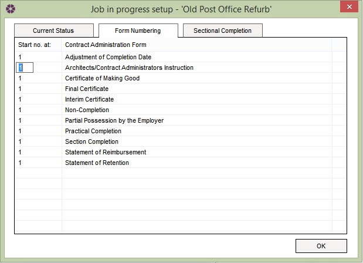

Job in Progress - Form numbering tab |
Within the Job in Progress window, select the Form Numbering tab to be presented with the following:

This tab is used to set the start number for each contract administration form number sequence. To set the start number of the relevant contract administration form, simply left-click into the appropriate cell in the 'Start no. at:' column - this will highlight the selected number, making it ready to adjust.
Please note: Sequence start numbers for Instructions Forms will only be displayed once these forms are issued. All other contract administration forms will display the sequence start number in draft status.
See Also:
Create new Job in Progress
Job in Progress - Current Status tab
Job in Progress - Sectional Completion tab